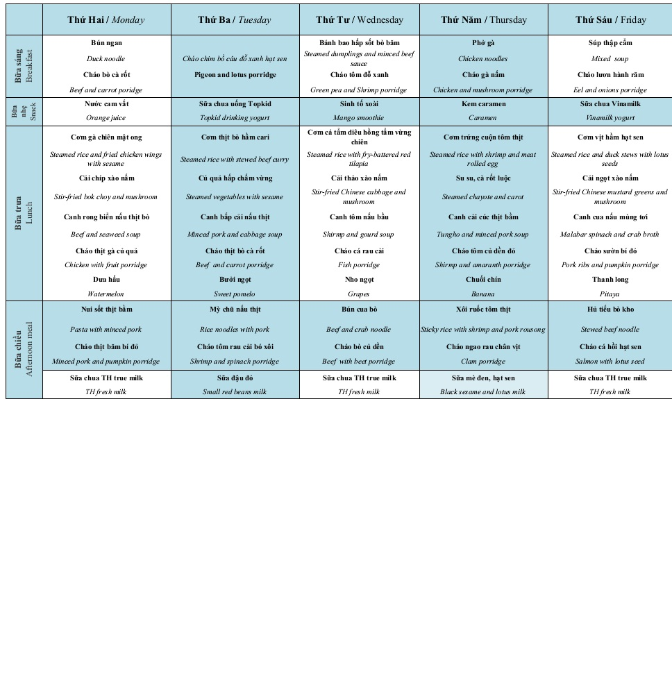

Câu hỏi thường ngày của các bạn nhỏ Chuồn chuồn ớt khi ở nhà: “Sao con bảo mãi mà mẹ không nấu như ở trường?” Ăn ở trường ngon hơn, chẳng như mẹ nấu!”
Vậy, bếp Chuồn chuồn ớt có bí kíp nấu ăn như thế nào mà hấp dẫn các con đến vậy?
Hệ tiêu hóa của trẻ trong “giai đoạn vàng 0-6 tuổi” vẫn còn non nớt, vì vậy chế độ dinh dưỡng và cách chế biến cần hết sức cẩn trọng. Hiểu được điều này, bếp Chuồn chuồn ớt áp dụng các tiêu chuẩn khắt khe nhất để đảm bảo dinh dưỡng an toàn cho trẻ nhỏ.
Dưới đây là bảng thực đơn hàng tuẩn của các con:
